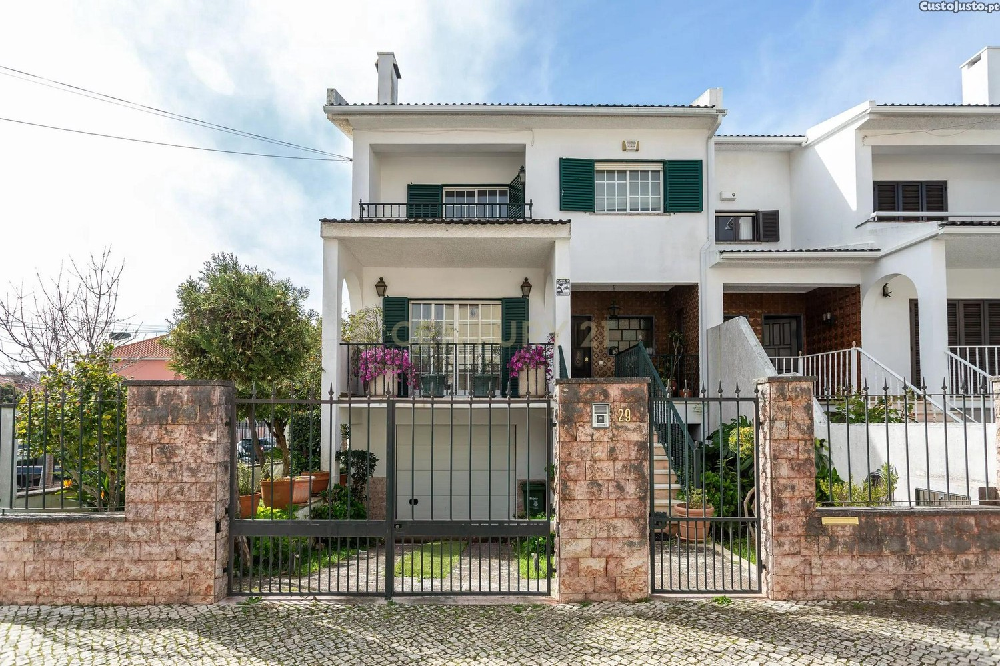
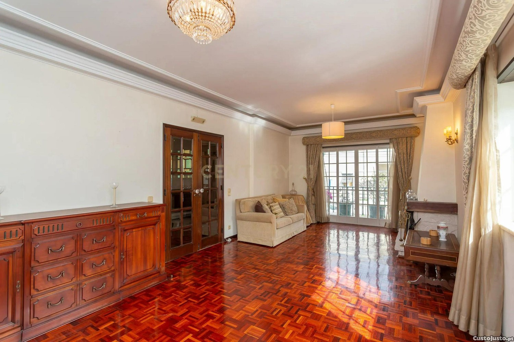
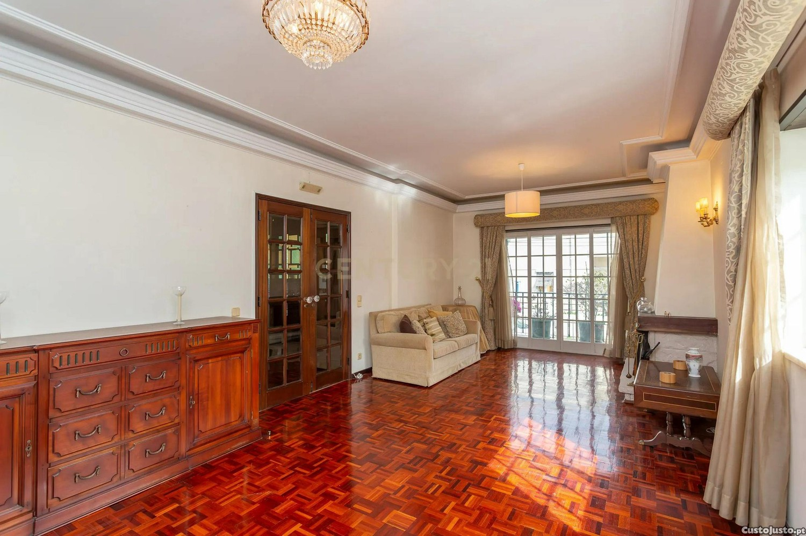
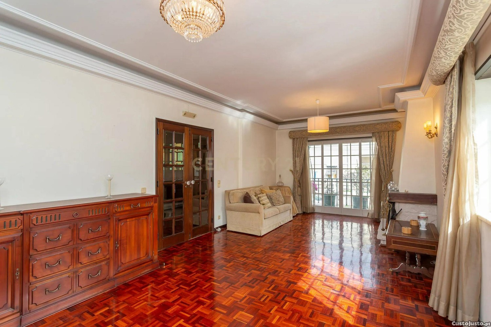

Moradia T4 em Santo Amaro de Oeiras
1 250 000 €


 


Especificações
- Tipologia: T4
- Área útil: 150 m²
- Área do terreno: 276 m²
- Classe Energética: D
- Ano de construção: 1985
- Tipo: Venda
- Concelho: Oeiras
- Freguesia: Oeiras e S. Julião da Barra
Descrição
Moradia ampla em Santo Amaro de Oeiras, com jardim envolvente e localização privilegiada a apenas 10 minutos da praia. A casa possui cozinha e casas de banho renovadas, garagem de 75 m², sala de estar, jantar e hall de entrada. No primeiro piso encontram-se quatro quartos, incluindo uma suite com varanda vista mar. O sótão foi convertido num espaço multiusos com pé direito alto e acesso a um terraço. O imóvel está equipado com ar condicionado e painéis solares, inserido num lote de 276 m². Ideal para famílias que procuram conforto e qualidade de vida.